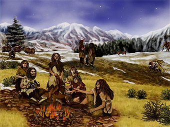

| Тоже человек Ирина Якутенко http://www.lenta.ru/articles/2009/02/07/neandertal/ |
|  | Предположительно так могла выглядеть типичная неандертальская семья. Изображение с
сайта jpl.nasa.gov Ученые расшифровали геном неандертальца Группа молекулярных биологов сообщила о завершении черновой расшифровки генома неандертальца. На данный момент надежность полученной генетической информации не очень высока - каждая "буква" ДНК была прочитана в среднем один раз, однако можно ожидать, что в ближайшем будущем авторы улучшат этот результат. |
Охотник, рыболов, говорун
Небольшой рост, низкий лоб, огромные надбровные дуги, выдающийся вперед подбородок, шерсть - приблизительно так большинство людей представляют себе неандертальцев. Тем не менее, они могли составить серьезную конкуренцию нашим предками, и ученые так до конца и не уверены, почему именно Homo sapiens победили в гонке на выживание. Термин "неандерталец" появился в 1856 году вскоре после того, как в ущелье Неандерталь возле Дюссельдорфа и Эркрата был обнаружен ископаемый череп. Он очевидно принадлежал человекоподобному существу, однако находка сильно отличалась от черепов современных людей. Через три года после открытия вышла книга Чарльза Дарвина "Происхождение видов", и просвещенная публика немедленно нашла для неандертальца место между обезьяной и человеком. Позже стало ясно, что это убеждение было ошибочным. Вскоре палеонтологи нашли еще несколько черепов и скелетов других неандертальцев, и в учебниках стали появляться иллюстрации, демонстрирующие внешний вид нашего древнего соседа по планете. Обычно Homo neanderthalensis изображают приземистым, ширококостным, покрытым рыжей шерстью (хотя первые более или менее достоверные данные в пользу того, что неандертальцы были рыжими, появились только недавно). На рисованных H. neanderthalensis всегда есть одежда из звериных шкур, а в руках они держат дубинку или еще какое-нибудь орудие. |
| На самом деле череп из ущелья Неандерталь - не первая такая находка. В 1829 году под городом Энжис в Бельгии был обнаружен череп неизвестного гоминида. Через 19 лет сходный череп нашли на Гибралтаре. Однако оба они были признаны останками H. neanderthalensis только после открытия 1856 года. |
| Дальнейшие исследования останков неандертальцев
показали, что эти художественные детали оказались оправданными. H. neanderthalensis были весьма
сообразительными и высокоразвитыми существами. Объем их головного мозга доходил до 1900
кубических сантиметров (у современного человека он не превышает 1300 кубических сантиметров).
Позже появилась теория о значительных перестройках структуры головного мозга у кроманьонцев
(древние представители современных людей), которые сделали его более эффективным при меньших
размерах. И тем не менее, существует множество свидетельств того, что по интеллектуальным
способностям неандертальцы не сильно уступали нашим предкам, а в некоторых аспектах даже
превосходили их.
В одном из исследований группа британских и американских ученых реконструировала орудия H. neanderthalensis и орудия древних людей. Ученые в точности воссоздали пластины, которые использовали неандертальцы, и лезвия, характерные для людей. Сравнив эффективность двух типов орудий, ученые убедились, что неандертальские пластины выполняют свои функции лучше человеческих лезвий. Авторы другой работы, исследовавшие найденные в графстве Суссекс наконечники копий и стрел, также убедились в том, что эти артефакты были весьма эффективными орудиями убийства. Еще одно свидетельство в пользу высокого интеллекта неандертальцев было получено в ходе работы, авторы которой изучали меню этих гоминид (под это определение попадают наиболее продвинутые приматы, в том числе и человек). В пещерах на побережье Испании, которые около 40 тысяч лет назад облюбовали H. neanderthalensis, они обнаружили раковины моллюсков, а также кости дельфинов и тюленей. Останки морских обитателей несли следы обработки каменными орудиями. Ловля тюленей и дельфинов требует от охотника большого мастерства и ловкости, и находка показала, что неандертальцы неплохо освоили сложное ремесло. После того как исследователям стали доступны генетические данные неандертальцев, появилась теория о том, что они были способны разговаривать. Основанием для такого предположения послужило обнаружение в ДНК H. neanderthalensis гена, который у человека связан с развитием речи. Однако внутреннее ухо неандертальца по своему строению сильно отличается от внутреннего уха Homo sapiens, что является контраргументом противников теории о "говорливости" неандертальцев. |
Слияние или уничтожение
Возникает вопрос: почему такие развитые существа прекратили свою эволюцию и исчезли. Существует несколько версий произошедшего. Наиболее распространенная точка зрения предполагает, что H. neanderthalensis были истреблены нашими далекими предками - кроманьонцами. Наиболее кровожадные ученые считают, что кроманьонцы целенаправленно уничтожали своих "братьев по разуму". Их более миролюбивые коллеги придерживаются мнения, что H. neanderthalensis вымерли самостоятельно, не выдержав конкуренции за ресурсы. |
| Существуют и более экзотические гипотезы, объясняющие, что стало причиной исчезновения неандертальцев. Например, исследователь из Оксфордского университета Симон Андердаун предположил, что H. neanderthalensis погубила традиция поедать своих сородичей. Ученый считает, что в популяции неандертальцев могло распространиться заболевание, сходное с коровьим бешенством. "Неправильные" белки из мозга заболевших жертв попадали в организм полакомившихся ими соплеменников и начинали свое разрушительное воздействие на их нервную систему. В результате "работы" таких белков, получивших название прионы, мозг больных приобретал консистенцию губки, и в конце концов они умирали. |
| Другая теория предполагает, что неандертальцы постоянно
скрещивались с Homo sapiens и постепенно слились с ними в один вид. Однако пока у ученых нет
генетических подтверждений, эта теория остается чисто умозрительной. До недавнего времени
считалось, что выделить из окаменелых костей неандертальцев ДНК, пригодную для анализа,
невозможно. За годы хранения в условиях, далеких от благоприятных, немногие сохранившиеся
нуклеиновые кислоты разрушились до совсем коротких (в 50-60 нуклеотидов) фрагментов, из которых
нужно восстановить полный геном длиной около трех миллиардов нуклеотидов.
Надежда на то, что так необходимая антропологам последовательность ДНК неандертальцев скоро станет известной, появилась в 2007 году. Коллектив исследователей под руководством Сванте Паабо (Svante Paabo) из института Эволюционной антропологии Макса Планка в Лейпциге заявил, что через два года сможет секвенировать (термин, которым обозначается процесс расшифровки последовательности ДНК) ДНК неандертальца. Чуть больше чем через год ученые опубликовали статью с расшифровкой полного митохондриального генома H. neanderthalensis. Митохондриальная ДНК содержится не в ядре, а в клеточной органелле под названием митохондрия. Эта ДНК существенно более короткая, поэтому ее последовательность проще восстановить в исходном виде. Источником нуклеиновых кислот послужила костная ткань из обнаруженных в Хорватии останков неандертальца возрастом около 38 тысяч лет. Используя специально разработанные технологии, Паабо и его коллеги смогли выделить и "прочитать" митохондриальную ДНК. В среднем каждый нуклеотид был расшифрован 35 раз. Большое число прогонов позволило свести число ошибок в секвенированной последовательности к минимуму. Но достоинства митохондриальной ДНК одновременно являются и ее недостатками - из-за своего малого размера она несет небольшое количество генов. Однако даже из имеющейся информации ученые сумели "выудить" интересные факты. Оценив число мутаций в ДНК митохондрий неандертальца и современного человека, исследователи заключили, что эти два вида никогда не смешивались друг с другом (на основании чего ученые могут делать подобные выводы, можно прочитать здесь). Через четыре месяца группа Паабо вновь обрадовала научный мир, сообщив о черновой расшифровке половины ядерного генома неандертальца, который скрывает большую часть информации о нем. ДНК была добыта из тех же останков. Точность в этот раз была заметно ниже - каждая "буква" была "прочитана" в среднем один раз. Низкая надежность полученной последовательности не позволяет проводить сравнительный анализ ДНК неандертальца и, например, современного человека. Тем не менее, на основании имеющихся данных можно делать выводы о наличии или отсутствии в геноме H. neanderthalensis тех или иных генов. В частности, исследователи заключили, что неандертальцы страдали от непереносимости лактозы - что неудивительно, так как дающие молоко животные были одомашнены значительно позже. Спустя еще месяц Паабо доложил о завершении расшифровки генома неандертальца. Оставшаяся половина ДНК тоже была "прочитана" один раз. Исследователи уже начали повторно секвенировать ДНК хорватского неандертальца. Кроме того, они получили генетический материал из останков еще пяти представителей вида H. neanderthalensis. Если группе Паабо удастся расшифровать все эти миллиарды нуклеотидов, ученые получат небольшую библиотеку генов неандертальцев, которая даст возможность проводить сравнительный анализ. А это при современном уровне развития математических и статистических методов позволит получить огромное количество информации о распределении генов в целом по популяции. Зная последовательность ДНК неандертальца, ученые, возможно, смогут понять причины его высокого интеллекта, а также раз и навсегда ответить на вопрос, смешивались ли между собой H. neanderthalensis и H. sapiens. Ирина Якутенко |